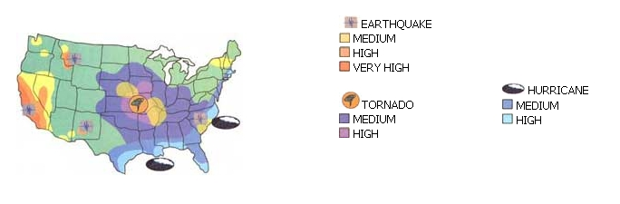

"Go West (or Midwest), folks" pretty well sums up the findings of MOTHER'S first-ever Community Survey - with apologies to 19th c. newspaper editor Horace Greeley and his admonition to adventurous and ambitious youth of his day. We stopped counting the responses just before press time, and, as always occurs when we ask you for your opinion, got significantly more than we asked for. Hundreds of you not only commented upon your individual communities, but also upon the state of the nation, the quality of our air, water and soil, and the content of our character. But first things first.
The greatest percentage of respondents who are big fans of their communities are centered in:
Wisconsin, Oregon, or Washington State, or ... In select communities or areas in a broad band running up the middle of the continent from Oklahoma through Missouri, Indiana, Michigan, and Minnesota and into the eastern prairie provinces, and/or ... In settlements of like-minded souls far from good-job markets, and where public services (schools, police) are few or less-than-adequate by city standards, or ... Outside a small city or on the fringes of a country town.
Best of the Best
Nearly all of the top-rated areas are quiet enclaves where geographic and social amenities have naturally attracted a gathering of people for whom sharing seems more important than conspicuous consumption ... often in locations where life can be a struggle with nature. None are places you'll find in conventional magazine or TV lists of "The Best Places to Live."
Following is our readers' choice of the ten best. They are listed in no particular order. Each is unique and approaches perfection in its own way.
Oregon and Washington - the whole of both states - earn a top rating. Most readers live in small towns a short ways off I-5 that parallels the coast some 60 miles inland, connecting major cities from Vancouver, British Columbia to Portland and the California coastline. Some folks mention the rain ... lots of rain. But Margo Fukuji doesn't even notice it. She moved from California to Veneta (Lane County, Oregon, ten miles west of Eugene) and finds "fresh air, moderate climate, great for outdoor activities, a safe place to raise a family, super friendly people [and only] 4.9 percent unemployment." 'Nuff said!
Washington and Oregon are also America's most environmentally-aware (and active) states.
The Kickapoo River Valley in west-central Wisconsin is another enclave of country-cooperation. A reader with the lyrical name of Ayla Heartsong writes."This is the most satisfying place on Earth, anywhere . .. a land of broad, big-sky ridges and tight, cozy valleys," where she has lived "the most self-sufficient life (so far)." There's been a "gentle meshing of century-old family farmers and back-to-the-landers" ... and ..."shopping malls are far away, but major cities still reachable."
Northeast Indiana/Ohio farm country surrounding Ft. Wayne and stretching into the northwest corner of Ohio, between Defiance and Lima, offers everything a country-living dreamer would want - if you like your land fiat to gently rolling, supremely fertile and well-watered by slow, wide rivers with names like Flatrock and Maumee, where you'll see kids fishing and swimming just like in Norman Rockwell paintings from the 1940s. For what its worth, Lima (pronounced with a hard "i" like the butter-bean, not "Leema" like the Peruvian city) was cited in a recent national real estate survey as having the cheapest hi-quality homes in the nation. This is the real Middle America: church-going, square-dancing, hog-raising country where folks don't lock the farmhouse door or feel they need to count their change at the feed store.
The maritime provinces of east coast Canada have a climate moderated by the ocean, so are not as cold and snowy as it is inland far to the south and west. The mile on mile of rocky coastline is notched with coves and little fishing villages that harbor sturdy but inexpensive homes, sturdy but friendly Scots-descended people, no crime or pollution, and all the codfish chowder, lobster, and home-grown vegetables you can eat. The "Novi" lobster boat, with its high-peaked bow and tucked stern is the most nimble of deep-sea hull designs ... and is still built of wood. The Maritimes are much like Maine was a half-century ago. Ms. Bonnie L. Scott's husband (they are readers from Norfolk, Va.) tells her not to mention their prospective retirement haven in Queens County, Nova Scotia, where they are "largely self-sufficient in food, housing, auto repair, and entertainment ... or else everyone will want to move here."
From Pulaski County, Ky. southwest to Monroe County, W. Va., along the spine of the Appalachians, you'll encounter communities of farming and light industry plus mountainous, tourist areas that have avoided the mining, logging, and rural poverty that plague some other areas of the Bluegrass and Mountain States. David Pike reports that his town of Somerset (Pulaski County, Ky.) "... [has] a nice balance of industry and tourism, [producing] ... a 5 percent unemployment rate. Lake Cumberland is a major destination for travelers: the soil is dark with just enough clay (great for organic gardens), schools rank among the top ten in Kentucky, it has a fantastic medical community, housing is abundant and reasonable and a new, medium-sized home costs $84,500." (When the national average new home of any size costs just under $110,000, we might add.) The only negative is the heat and humidity in July and August. Well, jump in the lake!
At the other end of the ridge, John Chernauskas of Troy (Monroe County, W Va.) points out that his and surrounding communities have stressed education and environmental protection, and - though at the cost of short-term job-growth - have resisted the inroads of such major industries as forest-product giants that strip the forests and pollute the water.
The aptly-named towns of Mountain Home (pop., approx. 9,000) and Mountain View (pop., approx. 2,000) bracket the Buffalo National River preserve and Ozark National Forest in northern Arkansas and are the center of a little-known paradise for Mother-Earth types. As Mountain View's Sandra Sutton says. "Our area rings with ... mountain music and people really enjoying the simple life .... You can't leave without wanting to come back [to] the natural beauty and friendly people."
Colorado, with a few reservations
There may be no more beautiful expanse of land in the nation than the one which is divided by the Rockies, but you won't be elated in the increasingly crowded, often smog-plagued (if economically booming) strip of cities running up the middle of Colorado along the foot of the mountains. The plains to the east also received mixed reviews among MOTHER readers. But another of our "Ten Best" locations is found in the mountains at the southwest corner of the state where the continental divide meanders through Saguache, Hinsdale, and Mineral counties and the San Juan and Los Caritas mountain ranges. Hidden away among the Gunniston, San Juan and Rio Grande National Forests is a scattering of hamlets where pass-closing winter snows demand a high degree of self-reliance and interdependence unknown in a city or flatland town. Our own favorite is the town of Creede in Mineral County, located up-grade beyond South Fork on Rt. 149. Bob Ford - "the dirty little coward who shot Mister Howard" ( Jesse James' false name) as it goes in the song - fled to the mountains after an irate public threatened to lynch him for his dastardly deed. Little Bob ran a bar in Creede, but got what most folks thought was too long in coming to him a few years later. There's a plaque on the spot where an unknown avenger walked in, unloaded both barrels of a 12-gauge into Ford's treacherous hide, turned heel and left, never to surface again.
Today, a less violent breed of folks hangs onto a hard but fulfilling existence in the mountains. As Lance Grolla of Crestone (Saguache County) says. "Three hundred family homes ... a dozen spiritual centers ... an eco-village ... a nature preserve that happens to have people in it ... Fifty strawbale homes ("Strawbale House Capital of North America") ... plus an earthship ... sandbag homes proposed ... do fine just bartering and sharing...." The town's motto is "Crestone, Colo., where inconvenience is a virtue."
Upper Mississippi River Valley towns get plaudits all around. The river may need a few more decades of dedicated cleanup, but the small towns around Davenport/Bettendorf, Iowa and Moline/Rock Island, Ill. stand out. Marva Venhuizen says of her town. "Albany [Ill.] is on the banks of the mighty, wonderful Mississippi River ... [with] Indian mounds, beautiful bluffs ... recreation year-round ... great gardening ... security and [fine] education for a small town."
South New Jersey is unknown to those of us who have experienced "the Garden State" only from the hi-priced 'burbs in the north around New York City, or from driving the foul-smelling urban wasteland along the N.J. Turnpike. But one need only get off the thruway beyond Trenton and head south to find areas where the state more than lives up to its nickname. Indeed, south Jersey - from the ecologically unique and largely uninhabited Pine Barrens of Burlington and Ocean counties down along the marshy north shore of Delaware Bay or off any interchange along the Garden State Parkway as it parallels the east shore down to Cape May - stands out as one of our ten best. Subscriber Kim Hauser of Vincentown (just off Rt. 206 and only seven miles downwind of the dreaded N.J. Turnpike) "... found plenty of work, very nice people, a helpful community, excellent schools ... and the gardening is great." Stores are a short trek away, but isn't that the point?
Inland from North Carolina's Pamlico and Albemarle Sounds you'll find piny woods and rich farmland that is overlooked by visitors sailing the sounds and taking in the sun during the heart of the summer. It's an area where "people barter services and family is the numberone concern. Money doesn't mean much ... simple living does," report Brian Waldron and his wife, who operate a 72-acre farm in Pitt County. Plus, within a short drive, "natives" have the snug harbors and bathing beaches to themselves any time they want during the warm spring and warmer fall months (and on the many balmy days in mid-winter) when the tourists are marooned back home in the snow drifts of Baltimore, Philadelphia, "The District" (Washington, D.C.), or New York City.
The entire state of Wisconsin is also a winner - despite (or, for many ice fishermen, snow-machine lovers, and cross-country skiers, because of) the snow. Gail Grundy of Kei, Manitowoc County finds ... many old farm houses with barns and a few acres for sale all over ... cheaper and better made than the new houses today. The Land is great for gardening." Indeed, in our companion article on finding your country property, you'll read of a Wisconsin dairy farm with more than 140 tillable acres, 4BR house and equipped milking barn being sold for less than $400/acre.
Retirement Heaven
Retirement communities are not welcome everywhere ... but several little-publicized areas were especially recommended for their friendliness toward retirees - and some famous ones were rejected. One winner is the Gulf Coast around Hattiesburgh, Miss. - a dynamic town of under 100,000, with 70 degrees Fahrenheit average temps (and humidity to match) and year-round gardening. (Drop a line to Ms. Sher-Lee Paula Broadhead of 316 Sunrise Rd., Petal, MS 39465. She is a one-woman Chamber of Commerce).
Emil Frey calls his retirement haven of Mountain View (Stone County), Ark., "a retirement heaven!"
Naples and Sanibel and the other shell islands on Florida's southwest (Gulf) coast are far too expensive for many readers. But within a brief drive upcoast, you can buy an old but still-good mobile home in earshot of the gulf in St. Petersburg for about $5,000 plus $210-a-month park rent. St. Pete does indeed have sloped curbs for seniors using chairs and walkers; you can still get a good meal at Morrison's Cafeteria for a dollar, and the sun is still guaranteed by the Chamber of Commerce to shine 300 plus days a year! Prices remain reasonable as you move on up through Sarasota to Tarpon Springs, report our readers.
Any but well-off retirees are also advised to avoid most of Florida's east (Atlantic) coast, especially the "Gold Coast" from crime-ridden Miami/Dade County and hipriced Ft. Lauderdale north to Daytona and on up to Palm Beach. One native Floridian is even leaving ancient, gracious St. Augustine farther north. He is "... going to Mississippi or Alabama so I can retire without the invasion that's ruined Florida." Inland, in Florida's livestock and citrus areas, there are many delightful retirement communities (some very reasonable - especially the mobile home parks - "... though you must watch out for the hurricanes.") However, Disney has ruined a once-delightful Orlando, report several readers ... and the cane-growing areas to the inland south "... reek of chemicals half the time."
"Sadly," report several readers, "... in much of California, taxes, fuel, and housing costs are prohibitive for folks on a reduced or fixed income." Arizona and other Southwest retirement havens remain excellent bargains if you can afford full-time air conditioning or take the dry heat. Roberta Mauck of Yuma, Ariz. appreciates "... cheap land ... [where] I can live in my RV ... on Social Security. Summer heat (114 degrees Fahrenheit with spikes to 124) drives away the population (good!) and kills everything but cactus .... But I love it here." Is there a parking space near by Roberta?
City Life
Many readers still tough it out in cities-if only to accumulate cash to escape to the country on weekends or full-time (someday). Houston; New York; Columbus, Ohio; the Boston area; Oklahoma City; Richmond, Va.; and other major cities were mentioned only as good places to be from - while nearby small towns and rural areas were often well-rated!
Readers confirm that conventional survey recommendations for "Small/Liveable Cities" such as Sioux Falls, S.D, are accurate; indeed every city in the West (particularly in Montana) seems to be erupting with small, fast-paced businesses (many started by folks fleeing city life - women in the majority). Good-paying office and light manufacturing jobs are available there too if you are "computer-literate."
Readers report that Salt Lake City and Seattle, Wash. abound with especially good folks (even if the air may leave something to be desired on occasion).
Grand Junction, Colo. is not too far from Denver and Boulder, but lacks their bad air and tourists, say other readers. Texas towns large or small fared badly in the survey: water and air were considered "evil."
Honolulu and San Francisco remain cities to leave your heart in - if you have plenty of money to leave there as well. They are heart-stoppingly expensive, leaving New York in their wake if you can imagine. Ditto Sitka, Anchorage, or any Alaskan city. But the charm, ambiance, and scenery make these Pacific cities worth it if you can foot the bill and must remain city-bound, say readers. And, the Pacific seafood!
Smog, Ticky-Tacky Tinseltown, hours of freeway driving, crime, and bad publicity notwithstanding, parts of Los Angeles County are reportedly sheer heaven-on-earth in winter, but "wicked hot" in the summer. Tucson and Pima are oases in Arizona, which is reportedly a desert where you can go from air-conditioned home and garage to car, parking garage and office and back, and never experience a real world described as "hotter'n the grates of hell."
Readers find an active cultural and intellectual life in college towns such as Ames, Iowa; Hamilton, Ohio; Ann Arbor, Mich.; Missoula, Mont.; Austin, Tex.; and Eugene, Oreg. But they are still cities ... and embody the kind of compromise we all make when we just can't make the grade financially in the sticks.
Plenty of readers report planning to move from a tourist-overrun area ... or from a hot to a balmy dime ... or from a too-cold climate to "anywhere your breath doesn't make snowflakes," as one reader puts it. Many regret that they have no choice but to flee too-pricey spots such as Long Island, N.Y. or southern California. Favorite destinations are the Carolinas or "Jefferson"-the quasi-separatist "state" made up of northern California and southern Oregon counties where the local economy is based on logging, ranching, and commercial fishing; an area of "... honest working men and women" that is a world apart from the coastal city academic/arts centers of Political Correctness often branded "The Left-Coast."
The one (distinctly Western, definitely un-"Left" and non-coast) city that gets universal raves as the single best place to accumulate cash to fund that country dream ... free of smog, street crime and urban stress ... and where living can be cheap ... is Reno, Nev.! (Not Las Vegas, note well.) Gaming and nite-time hi-life brings in the big bucks, so housing, food and family-style off-hour pursuits are reasonably-priced, but top-quality. Plus, good-paying work is available 24 hrs/day, year-round. One reader advises."... learn to deal blackjack or spin a roulette wheel ... there's no tax-witholding on your chiptips .. . and a gratuity from just one winning hi-roller can pay for a good chunk of land. But, plan to settle down in Indiana or Oregon. 'Sin City' is no place to raise kids!"
Look Well
Our admittedly non-scientific survey shows that areas vary greatly - often within short distances. Virginia residents living in the D.C. suburbs are not happy, but in the Tidewater area along Chesapeake Bay or out in the Appalachians, life is great! In Massachusetts, the Boston area is crowded and overpriced, while nontourist parts of Cape Cod are delightful. The urban areas of MOTHER'S birthplace, North Carolina, get mixed reviews but the Piedmont and shore are exceptional places to live!
In sum: Paradise is where you find it. So get started! We at MOTHER and the good readers who contributed to the survey all wish you good hunting and hope our efforts will help a little.
Methodology
In the previous two issues, readers were asked to return a questionnaire indicating their satisfaction with the climate, land, job and housing markets, and public services of their current or prospective country-home locales - together, indicating suitability of an area to a MOTHER-style life of independence on the land. Responses were received from southern California to British Columbia and Alaska, from Florida to Maine and the Maritimes, and in areas as diverse as cosmopolitan Las Vegas and parts of southern Alaska that are accessible only by air during the long winters. The map tabulates the findings.
By no means statistically valid, the survey neglects such major parts of North America as west Texas, all of North Dakota, and most of Canada. The wholly negative results from Tennessee and thin (if positive) results from much of the Far West are a fluke due to the informal nature of the survey (a statistically inconclusive, self-selected sample to use statisticians' jargon.) However, a broad enough scattering of MOTHER's readers responded to the survey - offering consistent-enough observations to reach the broad conclusion itemized in this article.
|
Below: Michael ""Scooter"" Marriner with his dog Larry in front of his Artas, S. D. home. Top: The heart of downtown Artas, nestled in one of South Dakota's massive prairies. |
Illustration by: Ann Rebecca Feild |
Top: Angela Jennings with her mother in Union, W. Va., between the George Washington and Jefferson National Forests. Middle: John Chernaukas and Angela in front of (bottom) their store. John describes Union as ""the best community in the country."" |
|
Dr. and Mrs. S. Fukuji and their home in Veneta, Oreg., described by the Fukuji's as a combination of ""fresh, air, moderate climate, and super-friendly people. |
|
|
|
|
 |
|